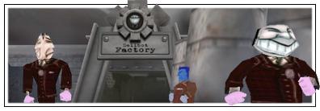

|

|
You値l need to team up with three other Toons before entering the Sellbot Factory. Just like entering a Cog building, assemble with your fellow Toons outside the Factory and get on the elevator. It will take you to the main entrance. Stand on the switch to open the doors to the lobby. In the lobby you will find a Goon and three Cogs - defeat them to get access to the switch that opens the door to the hallway.
For advanced Toons only:
There is a secret side elevator on the side of the Factory. This elevator takes you to the Duct Room instead of the Lobby.
Toon Tip:
Goons can cause a Toon a lot of problems - one hit from their eye beam will take 5 to 20 Laff points! To disable a Goon temporarily, jump on his head.
From the hallway you have three choices: straight ahead is the warehouse lookout, to the left is the boiler room, and to the right is the gear room. Take either the right or left path to get to the warehouse - there are three Cogs waiting in each location.
Toon Tip:
Check the barrels scattered through the factory for gags. Touch them to replenish your supply!
For advanced Toons only:
Try moving around crates and jumping on them to get at hard to reach places.
|
|
When you arrive at the warehouse you値l need to sneak past the Goons and make your way up to the roof of the storeroom. Defeat the four Cogs here to get access to the switch that opens the door on the far side of the warehouse and use the other switches to activate the stompers. The stompers will get rid of the Goons on the main warehouse floor and clear the way for you.
|
Head through the door on the far side of the warehouse and use either elevator to go to the top of the silos. You値l need to defeat the Cogs on the east and west silos to open the doors. The switches inside these silos open the doors to the center silo, where you値l face four Cogs in a final battle - including the Factory Foreman. Defeating the Factory Foreman earns your Toon one piece of the Cog Disguise and gets you one step closer to entering Sellbot Towers!
|
|